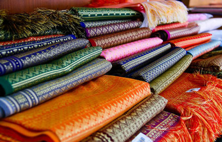
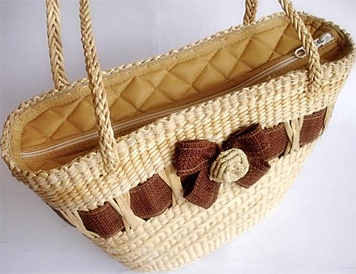

    <!--การเดินทาง-->
        <section >
          <div class=" text-center">
              <div class="service-box">
                <div class="col-lg-8 col-lg-offset-1 text-center">
                  <center>  <i class="fa fa-5x fa-shopping-cart  wow bounceIn text-primary" data-wow-delay=".2s"></i></center>
                  <h3>ของใช้</h3>
              </div>
          </div>
        </section>
        <br><br>
        <div class="row">
          <div class="col-lg-6 col-md-6 text-center">
             <div class="text-center"></div>
          </div>

          <div class="col-lg-6 col-md-6 text-center">
              <center>  <h3>ผ้าไหมพุมเรียง </h3> </center>
              <p class="text-muted">ผ้าไหมพุมเรียงเป็นงานหัตถรรมของกลุ่มหมู่บ้านชาวไทยมุสลิม ที่ตำบลพุมเรียง อำเภอไชยา เริ่มจากการความต้องการใช้ภายในครัวเรือน ต่อมา ได้พัฒนาเป็นการผลิตเพื่อการจำหน่ายเป็นอาชีพเสริม ปัจจุบันมี 5 ลาย ได้แก่ ลายราชวัตร ลายดอกพิกุล ลาบดอกโคม ลายนพเก้า และลายยกเบ็ด </p>
          </div>

        </div>
        <br>
        <br>
        <div class="row">

          <div class="col-lg-6 col-md-6 text-center">
          <div class="text-center"></div>
          </div>

          <div class="col-lg-6 col-md-6 text-center">
            <center>  <h3>หัตถกรรมพืชกระจูด </h3> </center>
              <p class="text-muted">กระจูดซึ่งเป็นพืชในท้องถิ่น ตำบลท่าสะท้อน อำเภอพุนพิน สุราษฎร์ธานี มาทำเครื่องจักสานเป็นเสื่อ ตะกร้า สมุก ซึ่งเป็นภูมิปัญญาท้องถิ่นได้รับการถ่ายทอดภายในชุมชน เพื่อใช้ภายในครัวเรือน และ เป็นผลิตภัณฑ์ที่มีเอกลักษณ์เฉพาะของจังหวัดสุราษฎร์ธานี</p>
          </div>

        <!-- end -->

        </div>
